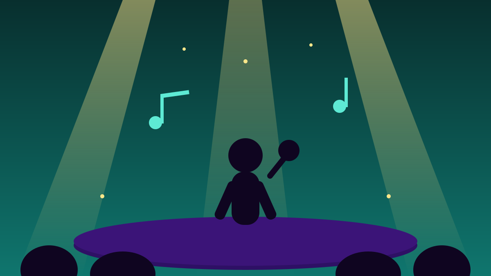

1 / 6

🎬 HIBURAN
Pembuka Festival yang Bukan Sekadar Konser
Efek Rumah Kaca buka Synchronize Fest 2026 dengan tiga babak — mulai dari tengah kerumunan. Geser →
2 / 6
🎪
Kapan dan Di Mana?
Efek Rumah Kaca (ERK) membuka Synchronize Fest 2026 di Gambir Expo Kemayoran, Jakarta, Jumat (16/10/2026), pukul 15.30–16.15 WIB selama sekitar 45 menit.
Festivalnya sendiri berlangsung tiga hari, 16–18 Oktober 2026, dengan 119 musisi di 10 area pertunjukan dan tema “It's Not Just a Festival, It's a Movement”. Gerbang dibuka setiap hari mulai pukul 15.00 WIB.
3 / 6
⭕
Babak 1: Lingkaran di Tengah Penonton
Alih-alih langsung naik panggung, ERK memulai dari area penonton. Sekitar 100 Penerka — sebutan penggemar ERK — membentuk lingkaran bersama penonton lain, dengan para personel berdiri di tengahnya.
Mereka membuka dengan lagu “Di Udara” dan “Mosi Tidak Percaya” dalam format akustik gitar. Sejumlah penonton mengenakan topeng bergambar aktivis dan korban penghilangan paksa, termasuk Munir, Marsinah, dan Wiji Thukul.
4 / 6
🎭
Babak 2: Seni Tubuh dan Payung Aksi Kamisan
Babak berikutnya menghadirkan pertunjukan seni tubuh dari Jakarta 32 yang mengangkat evaluasi satu tahun program Makan Bergizi Gratis (MBG), sambil bergerak menuju Forest Stage.
Kontras membagikan payung Aksi Kamisan untuk dipakai para personel dan Penerka. Rangkaian kemudian berlanjut ke panggung Forest Stage.
5 / 6
🎶
Setlist dan Pesan Lingkungan
Setelah jeda pertunjukan seni, ERK membawakan “Bersemi Sekebun”, dilanjutkan “Putih” dan “Matilah Kau Mati”. Di tengah pertunjukan juga ada promosi film “Laut Bercerita”.
Penampilan ditutup dengan “Kau dan Aku Menuju Hampa”, “Balerina”, dan “Cinta Melulu”. Di sela lagu, vokalis Cholil Mahmud turut mengajak penonton mendoakan mereka yang terdampak pembakaran hutan.
6 / 6
🤔
Efeknya ke lo apa?
Festival musik bisa jadi lebih dari sekadar nonton bareng — ERK nunjukin kalau panggung juga bisa jadi ruang buat ingat sejarah dan peduli isu sekitar.
Buat yang datang di hari kedua dan ketiga: susun jadwal dari rumah, datang lebih awal, dan sisakan jeda antar-panggung biar nggak ketinggalan musisi incaran lo.